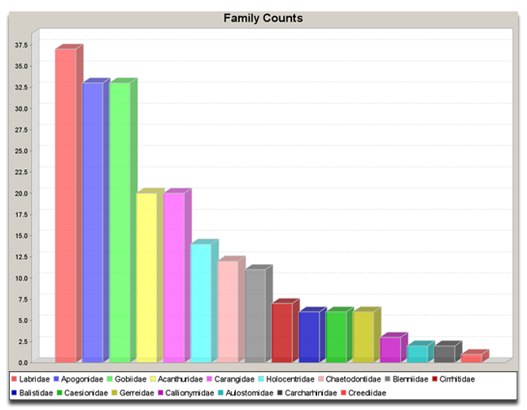

The easiest way to create this report is to 'drag and drop' a DataSet onto the Chart action on the sidebar. This eliminates the need to choose a DataSet for the report.
Or, click the Chart action on the sidebar. The following dialog will appear:
Chose a DataSet and click 'ok'. The next dialog will ask which Column will be used for the report:

Select the Field and click 'ok'. The report will open in the Workspace.
The following image is an example of a Chart report:
